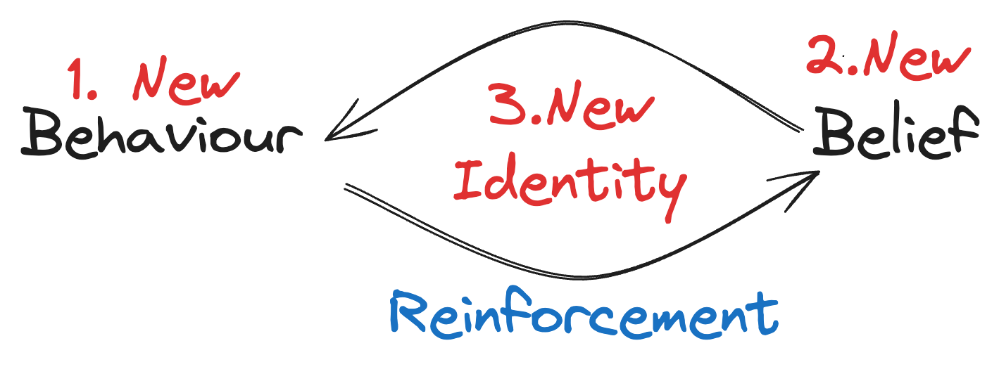

The Purpose Behind This Journal
January 5, 2025
This journal serves three primary functions: reflection, documentation, and accountability. It also aims to provide value to visitors by sharing insights and experiences related to fitness, reading, and programming.
Reflection and Documentation
These entries will create a structured space for self-analysis and progress tracking. By examining my experiences, decisions, and outcomes in areas like gym routines, reading habits, and coding projects, I'll gain clearer insights into my development and areas for improvement. This consistent documentation will serve as a valuable record of challenges overcome and milestones achieved.
Accountability
Publishing this journal on mabdulhussein.com adds an external layer of accountability. The public nature of these entries creates additional motivation to follow through on stated goals and commitments across my key focus areas.
Resource for Visitors
While this journal is personal, it aims to offer value to readers:
1. Fitness enthusiasts may find workout strategies and progress tracking methods.
2. Readers could discover book recommendations and insights from my reading.
3. Programmers might gain project ideas or perspectives on the learning process.
By sharing specific experiences and practical takeaways, this journal strives to provide actionable information that visitors can apply to their own pursuits.
This journal will function as a tool for personal growth and a potential resource for others on similar paths. It's a platform to reinforce my identity, while offering transparency into the process of consistent self-improvement.
← Back to Blog